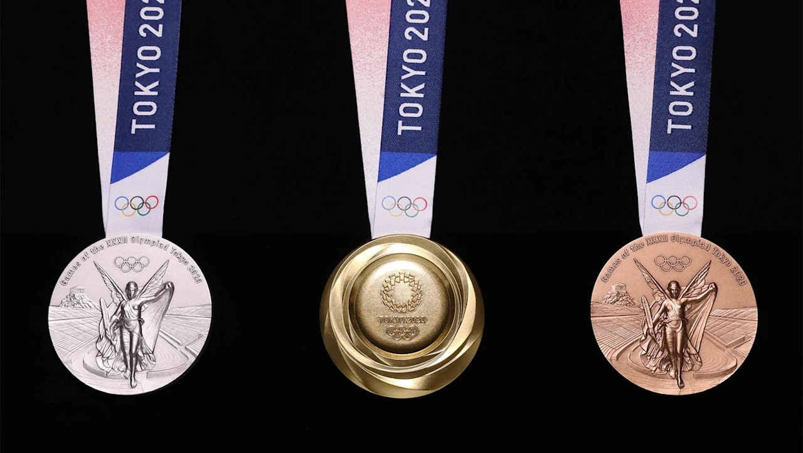

Az elmúlt 25 év legjobb olimpiai szereplése
Magyarország 6 arannyal, valamint 7-7 ezüsttel és bronzzal, azaz húsz éremmel zárt a tokiói olimpián, ez az utóbbi 25 év legjobb eredménye. Az 1996-os atlantai játékok óta, amikor eggyel több, 21 dobogós helyezés született, rendre kevesebb volt az érmek száma.
Az első hat helyezésen alapuló pontszámítást tekintve a tokiói szereplés az atlantait is felülmúlta. Akkor 151 pontot gyűjtött Magyarország, míg a japán fővárosban 156-ot. Ennél többet legutóbb a 11 aranyat hozó, 1992-es barcelonai játékokon sikerült szerezni, 211-et.
Tokióban 10 negyedik, 9 ötödik és 3 hatodik helyet értek el a magyar sportolók. Amíg azonban Rióban mindössze négy sportág képviselői szereztek érmet, addig a japán fővárosban kilenc sportágban volt dobogósunk.
Ugyanez igaz a pontszerzőkre is, a riói 8 után, Tokióban 12 sportág szereplői szereztek pontot.
Aranyérmesek
Szilágyi Áron
kard, egyéni
„Azt fel kell fognom, hogy mit csináltam ma, hogy háromszoros olimpiai bajnok lettem egyéniben, de azt óvatosan visszautasítom, hogy én lennék a sportág legnagyobb legendája. Természetesen nagyon büszke vagyok arra, amit itt ma, illetve az elmúlt kilenc évben elértem, de úgy érzem, vannak még címek, amiket meg lehet szerezni. Sok minden jár a fejemben, de egyelőre engedjék meg, hogy ezt megünnepeljem.”
Milák Kristóf
úszás, 200m pillangó
„Annyira szétestem a gatya-ügy miatt, hogy úgy voltam vele, csak ússzuk le. Sokan előre a nyakamba akasztották ezt az aranyérmet, de ugyanolyan komolysággal készültem erre a versenyre, mint bármelyik másikra korábban. A legfontosabb, hogy megvan az olimpiai bajnoki cím, az időket majd lehet kergetni ezután. Az olimpia után viszont két hónapig nem akarok medencét látni.”
Kopasz Bálint
K1 1000m
„Kilencéves korom óta erre készülök, eltelt 15 év, ami kőkemény munka volt. A lemondás volt a legnagyobb dolog: nem mentem el bulikba, nem barátkoztam senkivel, lemondtam a magánéletről. 15 éves korom óta szeretnék barátnőt, de erről is lemondtam. Felemelő érzés, hogy olimpiai bajnok lettem, jó érzés volt látni édesanyám arcán az örömöt. Elmondhatom, hogy Európa-bajnok, világbajnok és olimpiai bajnok vagyok K–1 1000 méteren. Ennél többet nem is akarhatok.”
Lőrincz Tamás
Kötöttfogású birkózás 77kg
„Egyszerűen hihetetlen, nem találom a szavakat, nem is emlékszem a döntő utáni másodpercekre, nem is értettem az egészet. Iszonyatosan boldog vagyok, szenzációs volt ott állni a dobogón, fogni ezt az érmet, alig várom már, hogy a gyerekeim nyakába akasszam és megöleljem őket.”
Tótka Sándor
K1 200m
„Azt hittem, hogy az olasz nyert, de ilyenkor mindig pesszimista vagyok. Aztán láttam az eredményjelzőn, hogy a HUN az első, akkor eltört bennem valami. Utána rögtön beszéltem a feleségemmel, ő az egyetlen, aki tudja, mit tettem bele. Itt Japánban minden összeállt, jobban bírom a meleget, mint mások, otthon 36 fokban edzettünk.”
Női kajaknégyes
K4 500m
- Kozák Danuta
- Csipes Tamara
- Bodonyi Dóra
- Kárász Anna
Kozák Danuta: „Ez a hat aranyérem hosszú élet kemény munkája. Köszönöm a csapattársaknak, akikkel ezt elérhettem. Köszönöm a férjemnek és a családomnak. A lányoknak, mert nélkülük nem tudtam volna ezeket az érmeket megszerezni. Ez egy életre szóló siker. Sok szenvedés és keserűség árán, de siker.” Csipes Tamara: „Minden rajtba úgy álltam be, hogy 32 éves vagyok, ennél gyorsabb már nem leszek. Most itt vagyok, és meg kell csinálnom. 21 éve kajakozom, ebből merítettem, nem pedig az elmúlt napokból. És ez kijött az egyesben.” Bodonyi Dóra: „A párosban elért bronzérmünk után csalódott voltam, azt időbe került feldolgozni. Pénteken azonban már felszívtam magam, és úgy jöttem ki a pályára, hogy nyerni fogunk. Azért jöttem Tokióba, hogy olimpiai bajnok legyek, és nem akartam aranyérem nélkül hazamenni.” Kárász Anna: „Hullámzó lelkivilággal készültem az olimpiára. Érdekes módon nálam nagyon hiányzott az a düh és a dac, amiről a lányok beszéltek. Tudtam, hogy mind a négyen ugyanazt akarjuk, még ha teljesen más miatt is. Ez is nagy önbizalmat ad, mert bármikor számíthatunk a másikra, akármi is történt vele az előző napokban. Egymásért is küzdünk a hajóban.”
Ezüstérmesek
- Siklósi Gergely párbajtőr, egyéni
- Milák Kristóf úszás, 100m pillangó
- Varga Ádám K1 1000m
- Berecz Zsombor vitorlázás, finn dingi
- Lőrincz Viktor kötöttfogás, 87kg
- Rasovszky Kristóf nyíltvízi úszás, 10km
- Csipes Tamara K1 500m
Bronzérmesek
- Decsi Tamás, Gémesi Csanád, Szatmári András, Szilágyi Áron
kard csapat - Tóth Krisztián judo, -90k
- Kozák Danuta, Bodonyi Dóra K2 500m
- Kovács Sarolta öttusa egyéni
- Hárspataki Gábor karate, Kumite -76kg
- Női vízilabda válogatott
- Férfi vízilabda válogatott
Az érmék
Az egy évvel elhalasztott olimpia és paralimpia győztesei számára összesen 5000 érmet gyártottak le.
Az olimpiai érmek ebben az esztendőben egy különleges projektből kapták az alapanyagukat: 2017-19 tavasza között, két éven át lakossági gyűjtés zajlott Japánban, melynek során használt elektronikai berendezéseket (mint pl. a mobiltelefonok, tabletek, fényképezőgépek) lehetett a meghatározott gyűjtőhelyeken leadni. Ilyen gyűjtőhelyek voltak a postahivatalok, iskolák, számos kültéri (utcai) gyűjtődoboz, illetve az egyik mobilvállalat üzletiben is leadhatták a készülékeket, akik szerettek volna adakozni.
Közel 80 ezer tonnányi készülék gyűlt össze! Az ezekből kinyert fémek mennyisége (32 kg arany, 3500 kg ezüst, és 2200 kg bronz) elegendő volt az érmekhez – számolt be az Olimpia honlapja. Az elektronikai hulladékból az olimpia szervezőivel szerződött feldolgozó vállalatok nyerték ki az alapanyagokat. Az érmeket tartó szalagok is újrahasznosított poliészter szálakból születtek.
Az érmeket Junicsi Kavanicsi tervezte, 400 pályázat közül választották ki az övét. A terveknek az előírt dizájnelemek (Niké istennő a Panatinaikosz-stadion előterében, az 5 karika, illetve az aktuális olimpia pontos neve) mellett egyéni szabadságuk is van, a japán tervező a ragyogást célozta meg a különböző szögben hajló felületek segítségével. Az érmek szalagjainak jellegzetes mintázatában a kimonóhajtogatást szimbolizálja, az egyedi dobozokat pedig fából, mégpedig japán kőrisből készítették el.
Az érmek mellett a kiosztásukhoz szükséges 100 dobogót is újrafeldolgozott műanyagból készítették el, ehhez 45 tonna háztartási és tengeri műanyaghulladékot gyűjtöttek be a szervezők.
Néhány adat az érmekről
Az átmérőjük 85mm, vastagságuk 7,7-12,1 mm. A 450 g tömegű bronzéremben 95 százalék réz, 5 százalék cink található, az ezüstérem 550 g tömegű tiszta ezüst. Az aranyérem úgy készül, hogy az 550 g tömegű ezüstérem felületére 6 g aranyat hordanak fel.
Éremtáblázat
| Helyezés | Ország | Arany | Ezüst | Bronz |
|---|---|---|---|---|
| 1. | Amerikai Egyesült Államok | 39 | 41 | 33 |
| 2. | Kína | 38 | 31 | 18 |
| 3. | Japán | 27 | 14 | 17 |
| 4. | Nagy-Britannia | 22 | 21 | 22 |
| 5. | Oroszország | 20 | 27 | 23 |
| 6. | Ausztrália | 17 | 7 | 22 |
| 7. | Hollandia | 10 | 12 | 14 |
| 8. | Németország | 10 | 11 | 16 |
| 9. | Olaszország | 10 | 10 | 20 |
| 10. | Franciaország | 9 | 12 | 11 |
| 11. | Kanada | 7 | 6 | 11 |
| 12. | Brazília | 7 | 6 | 8 |
| 13. | Új-Zéland | 7 | 6 | 6 |
| 14. | Kuba | 7 | 3 | 5 |
| 15. | Magyarország | 6 | 7 | 7 |
| 16. | Koreai Köztársaság | 6 | 4 | 10 |
| 17. | Lengyelország | 4 | 5 | 5 |
| 18. | Kenya | 4 | 4 | 2 |
| 19. | Csehország | 4 | 3 | 3 |
| 20. | Norvégia | 4 | 2 | 2 |